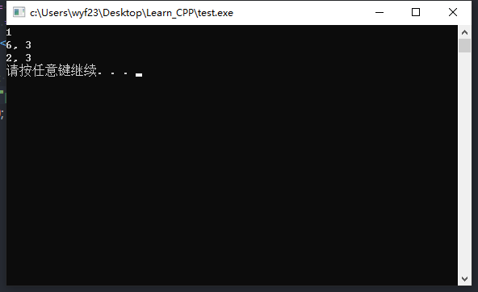

变量的作用域
- 变量的作用域是指变量的使用范围。
- 根据变量的使用范围不同，C++中的变量被分为局部变量和全局变量。
局部变量
- 在一个函数内或复合语句内定义的变量称为局部变量（函数的形参也属于局部变量）。
- 局部变量只允许在其定义的函数或复合语句中使用，离开所在的函数或复合语句后该局部变量将不能使用。
例如： 主函数中定义的变量，也不能在其他函数中使用。
1
2
3
4
5
6
7
8
9
10
11
12
13
14int f(int n)
{
for (int i=1;i<=n;i++>)
sum+=i;//这里的用法是错误的
return sum;
}
int main()
{
int sum=0;
sum=f(10);
cout<<sum<<endl;
return 0;
}例如： 复合语句中定义的变量，也只能在该复合语句中使用。
1
2
3
4
5
6
7
8
9
10
11
12int main()
{
int i=1,j=3;
cout<<i<<" ";
i++;
{
int i=0;
i+=j*2;
cout<<i<<", "<<j<<" ";
}
cout<<i<<", "<<j<<" ";
}
例如： for语句中控制变量的作用域。
1
2
3
4
5
6
7
8
9
10
11
12
13
14
15
16
17
18int main()
using namespace std;
int main()
{
int a[] = {34, 56, 23, 41, 33};
int x;
cin >> x;
for (int i = 0; i < 5; i++)
if (x == a[i])
break;
if (i < 5)
cout << "已找到，下标为：" << i << endl;
else
cout << "未找到！" << endl;
system("pause");
return 0;
}说明：
局部变量是在执行该函数或复合语句时自动建立，当该函数或复合语句执行完毕后将自动释放。所以在不同的函数或复合语句中定义同门的局部变量，也不会相互干扰。局部变量也成为自动类型变量。
全局变量
- 全局变量说明于所有函数之外，可以为所有函数共同使用。
- 全局变量可以在各个函数之间建立数据的传输通道。
例如：
1
2
3
4
5
6
7
8
9
10
11int a=3,b=5;//定义2个全局变量
int max(int a,int b)
{
return a>b?a:b;
}
int main()
{
int a=8;//变量同名时，局部变量优先于全局变量，需使用全局变量时加“::”双冒号
cout<<max(a,b)<<endl;
}几点说明
全局变量的作用范围是从定义点到整个源程序的结束。在定义点之前，如果其他函数要引用全局变量，可以在该函数中使用extern关键字对全局变量进行声明。
例如：1
2
3
4
5
6
7
8F1()
{
使用全局变量a,b
}
F()
{
}
int a=2,b=5;//全局变量定义使用全局变量，可以增加函数间的直接联系，减少函数定义时的参数。
- 由于全局变量在整个程序运行中始终占用内存，这样，使用全局变量将降低程序的通用性、可靠性和移植性，这是全局变量的负面作用。